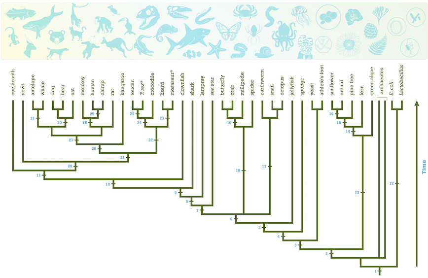

Tracking viral outbreaks in real time
John Huddleston
jlhudd@uw.edu
Why are we here?
- Connect the fields of programming and biology
- Use real tools for computational biology
- Explore patterns in virus evolution
Who am I?
- Ph.D. student in Molecular and Cellular Biology
- Studying influenza evolution in Trevor Bedford's lab at the Hutch
- Professional programmer for 8 years
- M.S. in computer science and biology
Who are you?
- Rising 10th and 11th grade students
- Programmers?
- Scientists?
The plan for today
- Introductions
- Reconstructing the Ebola outbreak with freely available tools
- Exploring the Ebola outbreak with Nextstrain
Outcomes for this workshop
At the end of this workshop you will know how to:
- Identify viral sequences from online databases
- Construct a multiple sequence alignment
- Build a phylogenetic tree
- Interpret ancestral relationships between organisms in a tree
Origins of an outbreak
Questions we need to answer
- What is the infectious unit?
- Where is the outbreak?
- How is it transmitted geographically?
- How is it transmitted between people?
- How is it evolving?
Where is the outbreak?
How is the virus transmitted?
Mutations can alter proteins

Mutations inform ancestral relationships

How to read a tree

An example from influenza
Explore online tools
https://www.ncbi.nlm.nih.gov/genomes/VirusVariation/DatabaseOr, Google:
ncbi virus variation database
Filter Ebola sequences
Align sequences
- Build sequence alignment
- Browse alignment
- Download alignment ("Fasta plus gaps")
- View alignment at http://msa.biojs.net/app/
Build a phylogenetic tree
- Build phylogenetic tree
- Collapse view to "viewport"
- Explore patterns
Explore Ebola outbreak with Nextstrain
- Where did Ebola emerge? Where did it expand most rapidly?
- When did the outbreak start?
- What mutations were associated with the outbreak?
- How does the mutation rate of Ebola compare to other viruses?
Behind the scenes of Nextstrain
Closing thoughts
Computational biology can provide insight into evolutionary processes happening in our lifetime
Many tools are available to everyone to use
You can contribute to the tools and/or the science
Continue to explore Nextstrain
- Where did the recent mumps outbreaks originate?
- How has Zika virus migrated globally?
- Which viruses have the fastest mutation rate? The longest genome?
- How do trees for different influenza genome segments differ from each other?